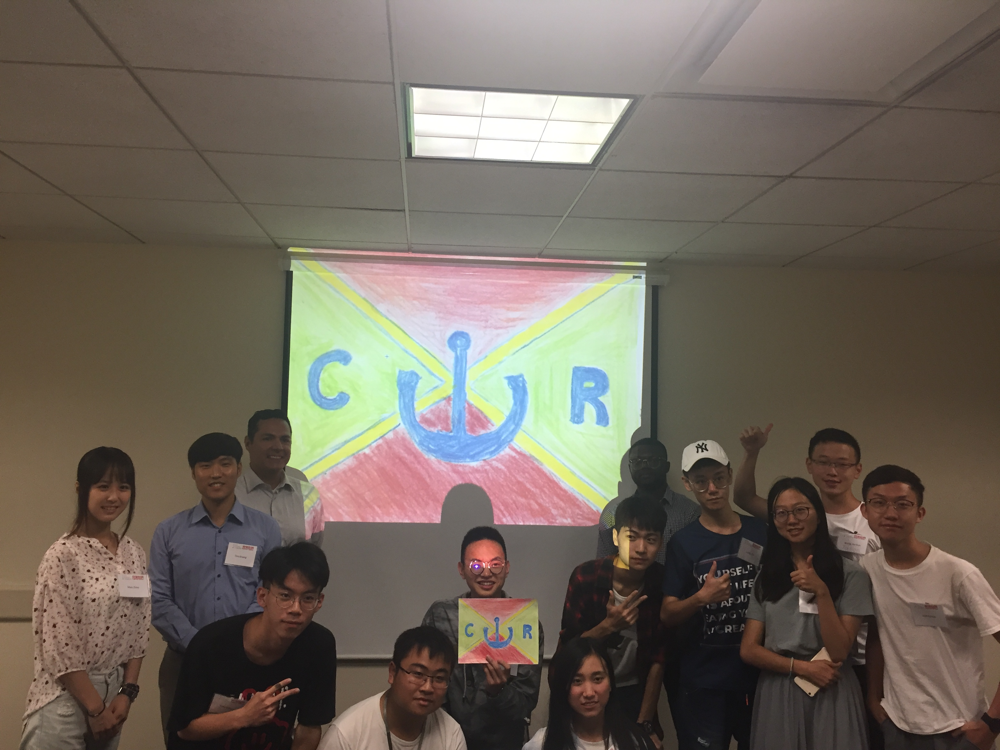

Commonwealth Republic (CR)
- CR has the largest population and diminishing space, and as such sees Mars as a good place to expand its population.
- It is a rapidly developing nation with a moderately educated population. It will reach Mars second.
- CR has rapidly increasing environmental issues from the extraction of natural resources.
- CR does not have enough resources to feed or heat its growing population, and aims to secure the resources on Mars.
- CR, as the largest country with a big consumer market, has significant influence over other countries through international trade deals.
- CR has the largest military spending capacity.
- Main Goals Include:
- Population control through colonization
- Resource extraction
- International prestige as a successful developing country to continue gaining influence abroad
_______________________________________________
The United Federation of Earth
Ministries: